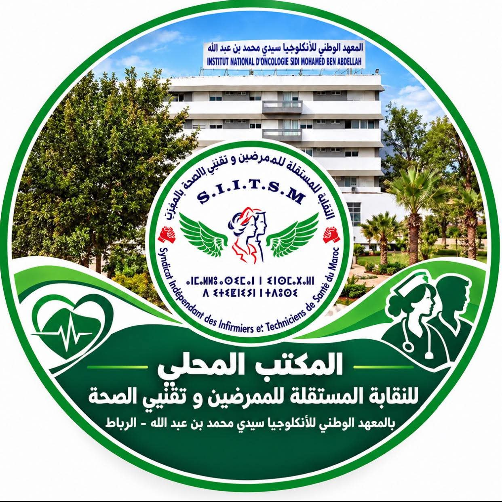

الرباط: لا للتطاول على كرامة الشغيلة الصحية، بيان استنكاري للمكتب المحلي بالمعهد الوطني للأنكولوجيا

على إثر ما تم تداوله عبر مواقع التواصل الاجتماعي من شريط فيديو يوثق واقعة تعرض الأطر الصحية العاملة بوحدة المستعجلات بالمعهد الوطني للأنكولوجيا بالرباط للقذف والإهانة من طرف أحد المرتفقين، يعبر المكتب المحلي للنقابة المستقلة للممرضين وتقنيي الصحة عن إدانته الشديدة واستنكاره المطلق لهذه التصرفات غير المقبولة، التي تمس بكرامة مهنيي الصحة، وتسيء إلى حرمة المؤسسات الصحية، وتهدد السير العادي للخدمات المقدمة للمرضى.
وإذ يعلن المكتب المحلي تضامنه المطلق واللامشروط مع الأطر الصحية المعنية، فإنه يؤكد أن هذه الواقعة لا يمكن فصلها عن واقع الاختلالات التنظيمية والبنيوية التي تعاني منها وحدة المستعجلات، وفي مقدمتها غياب الخدمات المساندة المكلفة بنقل المرضى ومرافقتهم بين مختلف المصالح والوحدات الاستشفائية، ومساعدتهم ومساعدة مرافقيهم، فضلاً عن الخصاص في عناصر الأمن الخاص المؤهلة للتدخل وحماية الأطر الصحية والمرضى والمرتفقين.
كما يسجل المكتب المحلي، بقلق بالغ، الوضع غير المقبول الذي يتم فيه تدبير وحدة المستعجلات خلال يومي السبت والأحد بممرضة واحدة وطبيب واحد فقط، في ظل العدد الكبير من المرضى والمرتفقين، وما يترتب عن ذلك من ضغط مهني ونفسي متزايد، وظروف عمل لا تضمن الحد الأدنى من السلامة المهنية وجودة التكفل بالمرضى.
إن استمرار هذه الاختلالات يخلق بيئة مشحونة بالتوتر والاحتقان، ويجعل الأطر الصحية في مواجهة مباشرة مع غضب المرتفقين واستيائهم من ظروف الاستقبال والتكفل، رغم أن معالجة هذه الإكراهات التنظيمية وتوفير الموارد البشرية واللوجستيكية اللازمة يندرجان ضمن مسؤوليات الإدارة، ولا يمكن بأي حال تحميل تبعاتهما للعاملين في الصفوف الأمامية. كما أن ما أظهرته الواقعة من توتر وتصعيد في التعامل يطرح بجدية احتمال تطور مثل هذه الأحداث إلى اعتداءات جسدية قد تكون عواقبها وخيمة، وهو ما يستدعي اتخاذ تدابير وقائية عاجلة قبل وقوع ما لا تحمد عقباه.
وأمام هذه الوضعية، فإن المكتب المحلي: ▪️ يدين بشدة كل أشكال السب والقذف والإهانة والاعتداء التي تستهدف الأطر الصحية أثناء أداء واجبها المهني، ويؤكد رفضه المطلق لأي مساس بكرامتها وسلامتها. ▪️ يحمّل إدارة المعهد مسؤوليتها الكاملة في توفير شروط العمل الآمنة والملائمة، واتخاذ التدابير التنظيمية والوقائية الضرورية لحماية الشغيلة الصحية والمرضى والمرتفقين. ▪️ يطالب بالتعزيز الفوري للموارد البشرية بوحدة المستعجلات، خصوصاً خلال أيام السبت والأحد والعطل، بما يتناسب مع حجم النشاط وضغط العمل. ▪️ يدعو إلى توفير خدمات نقل المرضى ومساعدتهم بشكل منتظم وفعال، مع تعزيز عناصر الأمن الخاص وتحديد آليات واضحة للتدخل السريع عند وقوع حوادث التهديد أو الاعتداء. ▪️ يطالب إدارة المعهد بتحمل مسؤوليتها في مؤازرة الأطر الصحية المتضررة، واتخاذ الإجراءات الإدارية والقانونية المناسبة لحماية كرامتها وصون حقوقها. ▪️ يؤكد أن تحسين ظروف استقبال المرضى والتكفل بهم وحماية حقوقهم يمران بالضرورة عبر توفير ظروف عمل تحفظ كرامة الأطر الصحية وتضمن سلامتها.
وفي الختام، يجدد المكتب المحلي تأكيده أن كرامة الشغيلة الصحية وسلامتها خط أحمر، وأن استمرار الخصاص والاختلالات التنظيمية لا يمكن أن يشكل مبرراً لتعريضها للمخاطر أو تركها في مواجهة مباشرة مع توترات المرتفقين دون حماية أو دعم مؤسساتي، كما يدعو إدارة المعهد إلى التدخل العاجل والمسؤول لمعالجة هذه الاختلالات، ويحمّلها مسؤولية ما قد يترتب عن استمرارها من تداعيات.
عاشت النقابة المستقلة للممرضين وتقنيي الصحة، حرة، مستقلة ومناضلة.
فتح في تطبيق النقابة